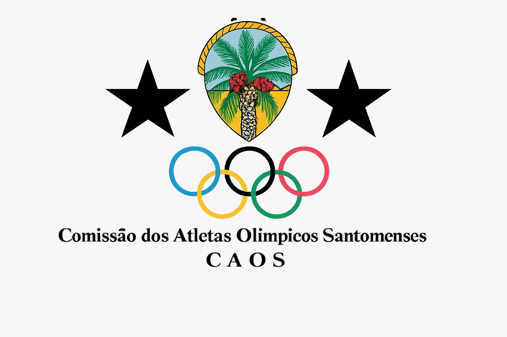

Fundação
Criado em 1979 e reconhecido oficialmente pelo Comité Olímpico Internacional (COI) em setembro de 1993.

O Comité Olímpico de São Tomé e Príncipe (COSTP) é o organismo máximo do desporto olímpico no país.
É responsável por gerir a representação são-tomense nos Jogos Olímpicos e promover os valores do olimpismo: excelência, respeito e amizade.
Entre em contactoINFORMAÇÕES GERAIS
Uma instituição dedicada à representação olímpica nacional e ao desenvolvimento dos valores do desporto.
Criado em 1979 e reconhecido oficialmente pelo Comité Olímpico Internacional (COI) em setembro de 1993.
João Manuel da Costa Alegre Afonso, reeleito em março de 2025 para mais um mandato.
Laureano Lima Ferreira Soares.
Integra a Associação dos Comités Olímpicos Nacionais de África (ACONA) e é membro fundador da Associação dos Comités Olímpicos de Língua Oficial Portuguesa (ACOLOP).
Caixa Postal 630, Palácio dos Pioneiros (Salas 9 e 10), Quinta de Santo António, São Tomé.
PERCURSO OLÍMPICO
Os atletas são-tomenses competiram pela primeira vez nos Jogos Olímpicos em Atlanta 1996. Desde então, o país tem marcado presença contínua nos Jogos de Verão.
Historicamente, São Tomé e Príncipe tem-se focado sobretudo no atletismo e na canoagem de velocidade.
O 16.º lugar do canoísta Buly Triste, nos 1000 metros em 2016, é um dos melhores resultados de sempre do país. Até ao momento, o país ainda não conquistou uma medalha olímpica.
Fonte do percurso olímpico: Olympedia — São Tomé e Príncipe.
Levar São Tomé e Príncipe aos Jogos Olímpicos com orgulho.
Divulgar os valores do olimpismo através do desporto.
Valorizar atletas e fortalecer o desporto santomense.